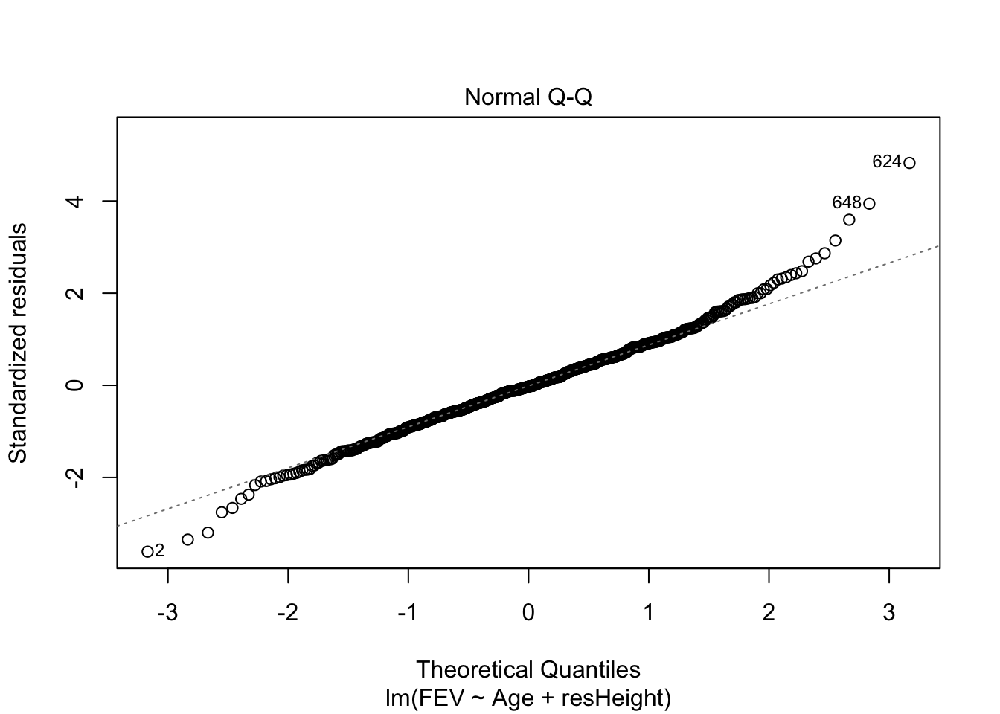
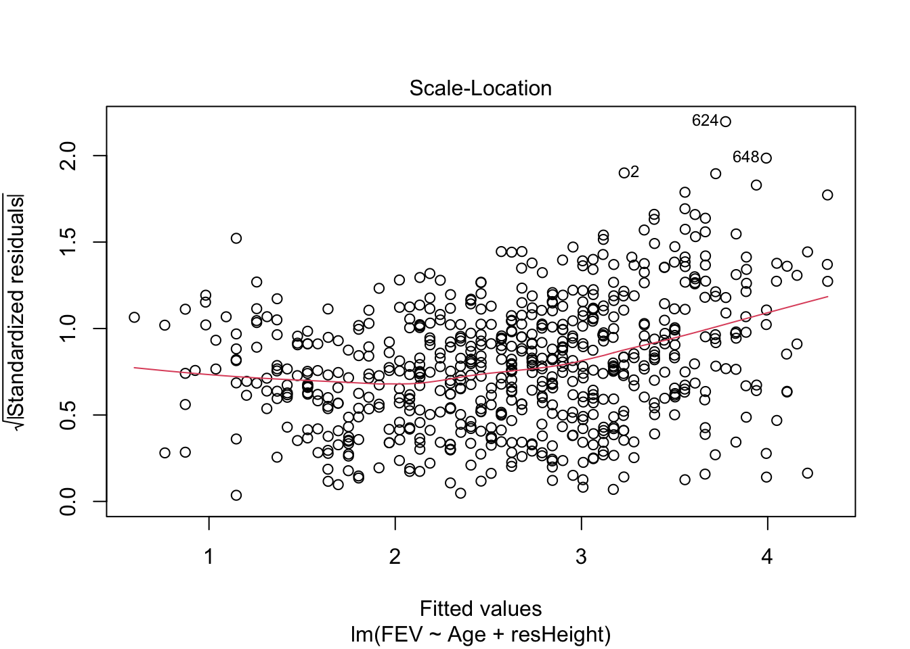
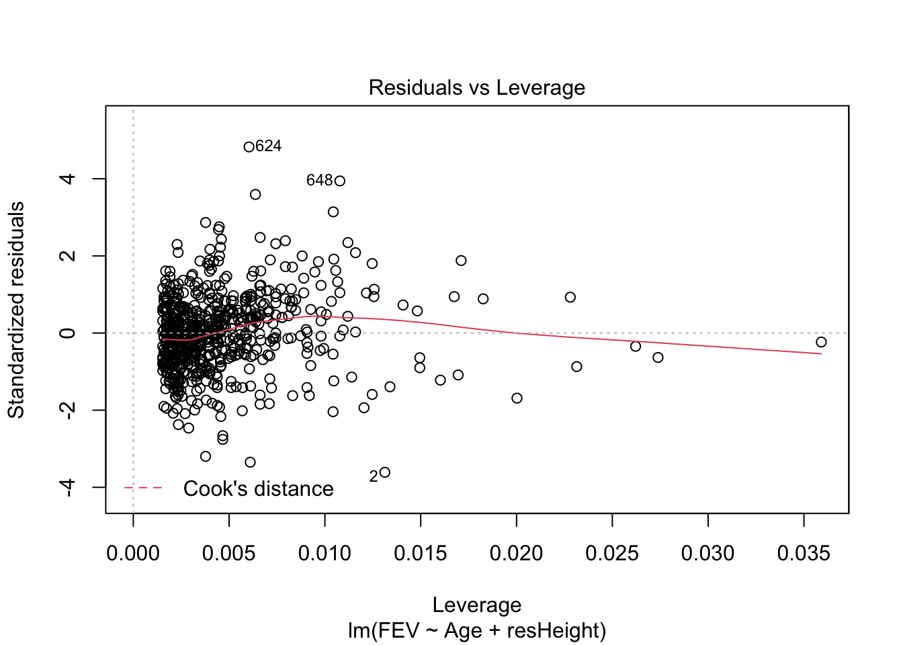
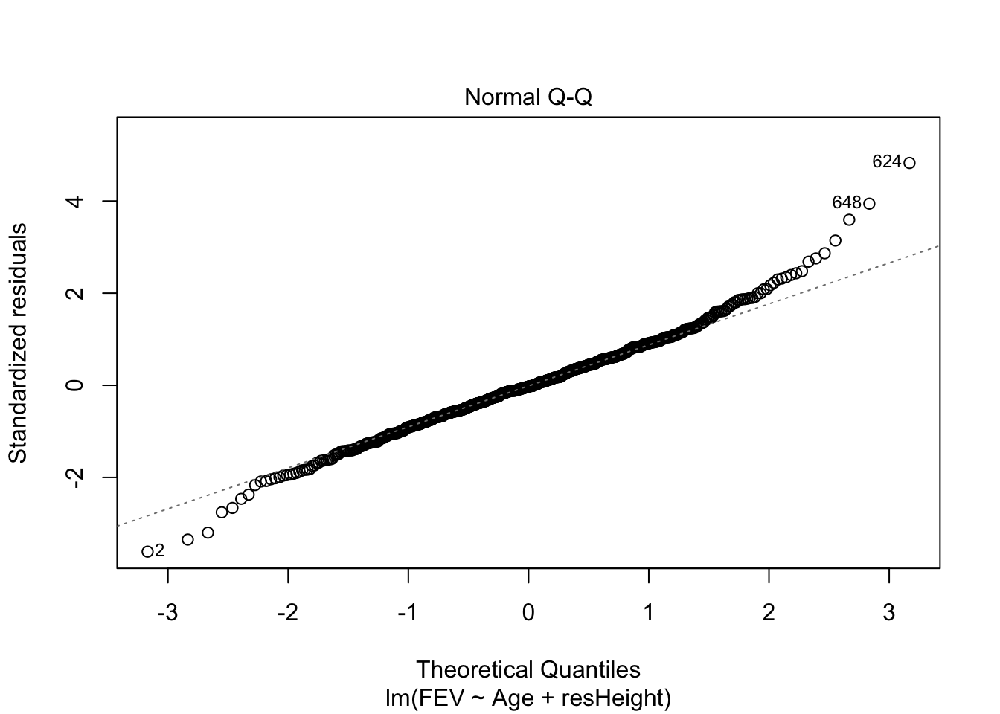
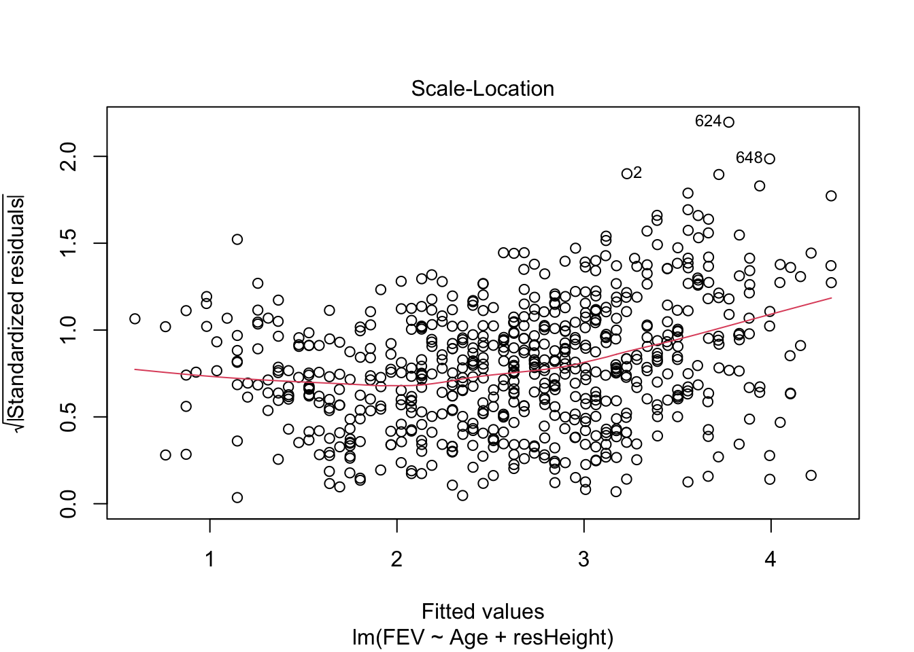
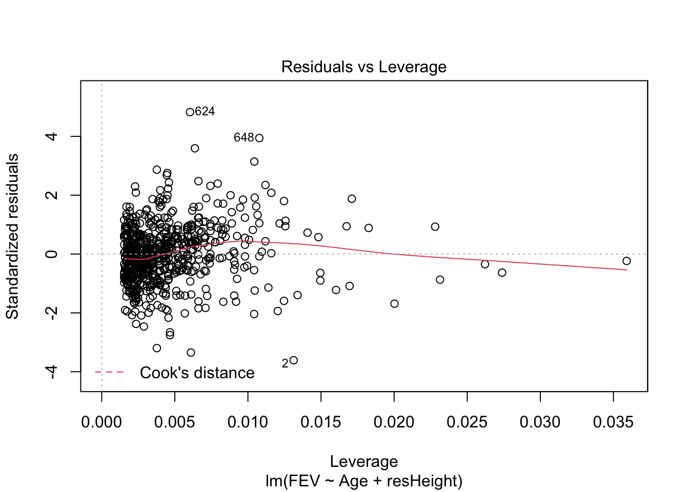

18 Множественная линейная регрессия
Связи двух переменных — это, конечно, хорошо. Но на практике нас обычно интересуют более сложные закономерности. Их, как мы говорили, можно изучать и корреляционным анализом, но регрессия делает это как-то более элегантно.
18.1 Множественная линейная регрессия с количественными предикторами
18.1.1 Математическая модель
Итак, мы хотим изучить влияние1 нескольких независимых переменных (предикторов) на нашу зависимую (целевую) переменную. Модель в общем-то меняется не сильно — просто добавляется ещё одно слагаемое:
\[ y_i = b_0 + b_1 x_{i1} + b_2 x_{i2} + e_i \]
Теперь нам надо подбирать не два коэффициента, а три. Но, на самом деле, это ничего не меняет.
18.1.2 Подбор модели
Конечно, если мы будем пытаться решить задачу аналитически, то там будут определённые изменения. Однако мы познакомились с матричными вычислениями и можем обратиться к ним.
В матричном виде модель будет записываться следующим образом:
\[ \boldsymbol{y}= \boldsymbol{X}\boldsymbol{b}+ \boldsymbol{e}, \] где \(\boldsymbol{y}\) — всё ещё вектор нашей зависимой переменной, \(\boldsymbol{X}\) — всё ещё матрица независимых переменных, \(\boldsymbol{b}\) — всё ещё вектор коэффициентов модели, а \(\boldsymbol{e}\) — вектор ошибок (остатков) модели.
Отличие будет в том, как организованы внутри \(\boldsymbol{X}\) и \(\boldsymbol{b}\):
$$ = \begin{pmatrix} 1 & x_{11} & x_{12} \ 1 & x_{21} & x_{22} \ 1 & x_{31} & x_{32} \ & & \ 1 & x_{n1} & x_{n2} \end{pmatrix};
\begin{pmatrix} b_0 \ b_1 \ b_2 \end{pmatrix} $$
Вычисление же коэффициентов будет осуществляться абсолютно аналогично простой линейной регрессии:
\[ \boldsymbol{b}= (\boldsymbol{X}^\mathrm{T}\boldsymbol{X})^{-1}\boldsymbol{X}^\mathrm{T}\boldsymbol{y} \]
Ясно, что не важно, сколько предикторов будет содержать модель — вычисление коэффициентов будет работать одинаково. Однако по сравнению с простой линейной моделью здесь есть одна важная особеность.
18.1.2.1 Проблема мультиколлинеарности
Предикторы могут быть связаны не только с целевой перемненой, но и друг с другом, что обуславливает проблему мультиколлинеарности.
В чем она заключается? Посмотрим ещё раз на формулу выше, которая нам позволяет вычислить параметры модели: в ходе вычислений мы берем обратную матрицу. Если наши предикторы сильно коррелируют друг с другом (\(\geq 0.8\)), то в нашей матрице возникают линейно зависимые столбцы, а значит обратная матрица не будет существовать.
Чем это чревато? В случае абсолютно линейной связи коэффициент модели просто не вычислится — в аутпуте будет NA. Как правило, это намёк на то, чтобы проверить данные — возможно, у вас есть одна и та же переменная, записанная по-разному (например, рост в метрах и сантиметрах). В случае высоких (но меньших единицы) корреляций проблема подбора коэффициентов решается с помощью методов численной оптимизации, однако это может приводить к смещённым оценкам коэффициентов модели, а также большим ошибкам в оценках коэффициентов.
Поэтому с мультиколлинеарностью надо бороться. Вариантов существует много. Наиболее часто используемые: исключение коллинеарных переменных из модели, метод служебной регресии, методы уменьшения размерности (кластерный анализ, PCA и др.).
18.1.2.2 Подбор коэффициентов модели в R
Подбор модели осуществляется с помощью той же самой функции lm(), только в данном случае немного изменяется запись модели. Другие предикторы перечистяются через символ +, как и в математической записи модели.
Допустим, мы хотим учесть в модели [из прошлой главы] не только возраст, но и рост ребенка в предсказании ОФВ. Построим такую модель:
##
## Call:
## lm(formula = FEV ~ Age + Height, data = ofv)
##
## Residuals:
## Min 1Q Median 3Q Max
## -1.50533 -0.25657 -0.01184 0.24575 2.01914
##
## Coefficients:
## Estimate Std. Error t value Pr(>|t|)
## (Intercept) -4.610466 0.224271 -20.558 < 2e-16 ***
## Age 0.054281 0.009106 5.961 4.11e-09 ***
## Height 0.109712 0.004716 23.263 < 2e-16 ***
## ---
## Signif. codes: 0 '***' 0.001 '**' 0.01 '*' 0.05 '.' 0.1 ' ' 1
##
## Residual standard error: 0.4197 on 651 degrees of freedom
## Multiple R-squared: 0.7664, Adjusted R-squared: 0.7657
## F-statistic: 1068 on 2 and 651 DF, p-value: < 2.2e-16Как мы видим, аутпут функции summary() практически не отличается от простой линейной регрессии, только угловых коэффициента у нас теперь два, а не один.
18.1.3 Оценка качества модели
Качество модели оценивается аналогично простой линейной регрессии.
Прежде всего, мы смотрим на F-статистику и p-value, рассчитанный для неё. Если p-value меньше конвенционального значения 0.05, то мы делаем вывод о том, что модель в целом статистически значима.
Далее обращаем внимание на \(R^2\), а лучше сразу на \(R^2_{\mathrm{adj}}\) — скорректированный коэффициент детерминации. Почему на него? Так как в нашей модели теперь несколько предикторов, то скорректированный [на количество предикторов] коэффициент детерминации для нас более информативен. В частности, по его значениям мы можем сравнивать модели с разным количеством предикторов. Как он корректируется? Вот так:
\[ R^2_{\mathrm{adj}} = 1 - (1 - R^2)\frac{n-1}{n-p} \]
После оценки информативности модели мы переходим к тестированию значимости отдельных предикторов — и здесь тоже всё аналогично простой линейной регрессии. Есть оценки значений коэффициентов, есть их стандатные ошибки, есть значение t-теста и p-values, рассчитанные для них. Со всем этим мы уже знакомы.
18.1.4 Диагностика модели
18.1.4.1 Исследование мультиколлинеарности
Но если мы на секунду задумаемся… Мы ввели в модель предиктор «рост», который несомненно связан с ОФВ. Однако он также связан и с возрастом! А не принесли ли мы в нашу модель коллинеарных предикторов?
На этапе разведочного анализа при наличии большого числа предикторов полезно посмотреть на корреляционную матрицу предикторов — что с чем связано. В нашем случае мы можем просто посчитать значение корреляции, так как у нас предикторов сейчас всего два:
## [1] 0.7919436Ожидаемо высокая корреляция. Если корреляция предикторов друг с другом 0.8 и выше — повод задуматься о мультиколлинеарности. У нас значение довольно близкое. Продолжим анализ.
Для того, чтобы выявить, есть ли таки у нас проблема мультикоолинеарности, или мы радостные и довольные можем наслаждаться результатами моделирования, необходимо вычислить коэффициент вздутия дисперсии (variance inflation factor, VIF). Чтобы его вычислить, проводятся следующие операции:
- пусть у нас есть модель \(y = b_0 + b_1 x_1 + b_2 x_2 + \dots + b_m x_m + e\)
- строиться линейная регрессия, в которой один из предикторов регрессируется всеми другими. Например, для первого предиктора:
\[ x_1 = \alpha_0 + \alpha_2 x_2 + \dots \alpha_m x_m \]
- вычисляется коэффициент детерминации для данной модели \(R_i\)
- вычисляется VIF для коэффциента \(b_i\):
\[ \mathrm{VIF}_i = \frac{1}{1 - R^2_i} \]
Все эти вычисления реализованы в функции vif() из пакета car:
## Age Height
## 2.682221 2.682221Пороговым значением для вынесение вердикта о наличии мультиколлинеарности считается 3 (иногда 2). Мы этот вердикт всё же вынесем, и будем с мультиколлинеарностью бороться.
18.1.5 Доработка модели
Как уже отмечалось выше, способов борьбы с мультиколлинеарностью существует несколько. Сейчас мы рассмотрим метод служебной регрессии.
В чём логика этого метода? Наши предикторы связаны друг с другом, но всё же корреляция меньше единицы (что так-то ожидаемо и логично). То есть, часть изменчивости роста может быть объяснена изменчивостью возраста, а часть, конечно же, останется случайной изменчивостью. Звучит как регрессия, не так ли?
Итак, мы можем построить служебную регрессионную модель, которая учтёт часть извенчивости роста, связанную с возрастом — будем считать возраст основным предиктором для нашей главной модели. Всё то, что возрастом объяснено не будет, составит остатки модели служебной регрессии, которые мы сможем внести как предиктор в модель.
Давайте по порядку. Строим служебную регрессию:
Записываем остатки модели в новую переменную датасета:
Заменяем в главной модели рост на «остатки по росту»:
##
## Call:
## lm(formula = FEV ~ Age + resHeight, data = ofv)
##
## Residuals:
## Min 1Q Median 3Q Max
## -1.50533 -0.25657 -0.01184 0.24575 2.01914
##
## Coefficients:
## Estimate Std. Error t value Pr(>|t|)
## (Intercept) 0.431648 0.057606 7.493 2.2e-13 ***
## Age 0.222041 0.005560 39.934 < 2e-16 ***
## resHeight 0.109712 0.004716 23.263 < 2e-16 ***
## ---
## Signif. codes: 0 '***' 0.001 '**' 0.01 '*' 0.05 '.' 0.1 ' ' 1
##
## Residual standard error: 0.4197 on 651 degrees of freedom
## Multiple R-squared: 0.7664, Adjusted R-squared: 0.7657
## F-statistic: 1068 on 2 and 651 DF, p-value: < 2.2e-16Коэффициенты, конечно, получились другие, но модель осталась статистически значима, более того, остатки служебной регрессии в качестве предиктора тоже оказались статистически значимы — значит есть зависимость ОФВ от той изменчивости роста, которая не объясняется возрастом.
И самое главное, что больше нет мультиколлинеарности:
## Age resHeight
## 1 1Для множественной линейной регрессии также можно строить диагностические графики, которые будут интерпретироваться аналогично графика простой линейной регрессии. Например, для модели model2 графики будут выглядеть так:
 


Оцените, стала ли модель лучше после включения в неё второго предиктора. Сравните model2 и model из предыдущей главы.
18.2 Множественная линейная регрессия с количественными и категориальными предикторами
Когда мы имеем дело с количественными предикторами, то всё более-менее ясно — есть зависимость между двумя количественными переменными, описываемая прямой. А что делать, если среди предикторов появляются категориальные переменные?
Посмотрим на датасет, с которым мы работаем, внимательно:
## tibble [654 × 7] (S3: spec_tbl_df/tbl_df/tbl/data.frame)
## $ ID : num [1:654] 301 451 501 642 901 ...
## $ Age : num [1:654] 9 8 7 9 9 8 6 6 8 9 ...
## $ FEV : num [1:654] 1.71 1.72 1.72 1.56 1.9 ...
## $ Height : num [1:654] 57 67.5 54.5 53 57 61 58 56 58.5 60 ...
## $ Sex : chr [1:654] "Female" "Female" "Female" "Male" ...
## $ Smoker : chr [1:654] "Non" "Non" "Non" "Non" ...
## $ resHeight: Named num [1:654] -2.72 9.31 -2.16 -6.72 -2.72 ...
## ..- attr(*, "names")= chr [1:654] "1" "2" "3" "4" ...
## - attr(*, "spec")=
## .. cols(
## .. ID = col_double(),
## .. Age = col_double(),
## .. FEV = col_double(),
## .. Height = col_double(),
## .. Sex = col_character(),
## .. Smoker = col_character()
## .. )Есть две тестовые переменые: Smoker и Sex.
##
## Current Non
## 65 589##
## Female Male
## 318 336Они категориальные. Вполне можно ожидать, что, например, у курящих и некурящих ОФВ будет различаться, так как это показатель косвенно свидетельствующий о состоянии бронхиального дерева. Как включить это в модель?
18.2.1 Математическая модель
С точки зрения влияние категориального предиктора на целевую переменную будет выражаться в различном базовом уровне, то есть intercept, для разных категорий наблюдений. В модели это фиксируется так:
\[ y_i = b_0 + b_1 I_1 + b_2 x_2 + b_3 x_2 \]
В данном случае представлена модель с одним категориальным (\(I_1\)) и двумя количественными (\(x_1\), \(x_2\)) предикторами.
Переменная \(I\) — это переменная индикатор, которая обладает следующим свойством:
- \(I_1 = 0\), если наблюдение относится к категории 1,
- \(I_1 = 1\), если наблюдение относится к категории 2.
Таким образом, у нас получается как бы две модели в одной:
- для наблюдений категории 1 модель принимает следующий вид: \(y_i = b_0 + b_2 x_2 + b_3 x_2\),
- а для наблюдений категории 2 вот такой: \(y_i = (b_0 + b_1) + b_2 x_2 + b_3 x_2\).
Коэффициент \(b_1\) показывает разницу в базовых уровнях между двумя категориями (группами) наблюдений.
18.2.2 Подбор модели
С точки зрения подбора модели кардинальных изменений не происходит:
А вот на аутпут summary() придётся посмотреть чуть внимательнее:
##
## Call:
## lm(formula = FEV ~ Age + resHeight + Smoker, data = ofv)
##
## Residuals:
## Min 1Q Median 3Q Max
## -1.50182 -0.26305 -0.01882 0.24989 1.98535
##
## Coefficients:
## Estimate Std. Error t value Pr(>|t|)
## (Intercept) 0.28752 0.09729 2.955 0.00324 **
## Age 0.22656 0.00607 37.321 < 2e-16 ***
## resHeight 0.10909 0.00472 23.115 < 2e-16 ***
## SmokerNon 0.11023 0.06002 1.837 0.06672 .
## ---
## Signif. codes: 0 '***' 0.001 '**' 0.01 '*' 0.05 '.' 0.1 ' ' 1
##
## Residual standard error: 0.4189 on 650 degrees of freedom
## Multiple R-squared: 0.7676, Adjusted R-squared: 0.7665
## F-statistic: 715.7 on 3 and 650 DF, p-value: < 2.2e-16Отличия мы находим в таблице с предикторами. Здесь мы видим, что у Age и у resHeight коэффициенты остались как и прежде, но добавилась ещё одна строка — SmokerNon. Так как наша переменная содержит только два уровня, baseline какой-то из двух групп уходит в intercept — в данном случае это SmokerCurrent. Коэффициент при SmokerNon показывается, на сколько отличается baseline группы SmokerNon по сравнению со SmokerCurrent. Итак, объем форсированного выхода на первую секунду у некурящих детей на 0.11 литра больше, чем у курящих. Результат, вполне согласующийся со здравым смыслом.
Оценка и диагностика модели производится аналогично тому, как мы это делали на предыдущих моделях.
18.3 Модели со взаимодействием предикторов
18.3.1 Математическая модель
18.3.2 Подбор модели
18.3.3 Оценка качества модели
18.3.4 Диагностика модели
18.4 Сравнение моделей
Будем говорить о влиянии, помня о тех оговорках, которые мы обозначили в предыдущей главе — регрессия per se не показывает причинно-следственной связи.↩︎